This content is only available in bigger screens at the moment
Image Croping Tool
Add Image

Clear Canvas
Crop Selection
Save Image
There's no image selected
click on the top right to add an image to get chopped